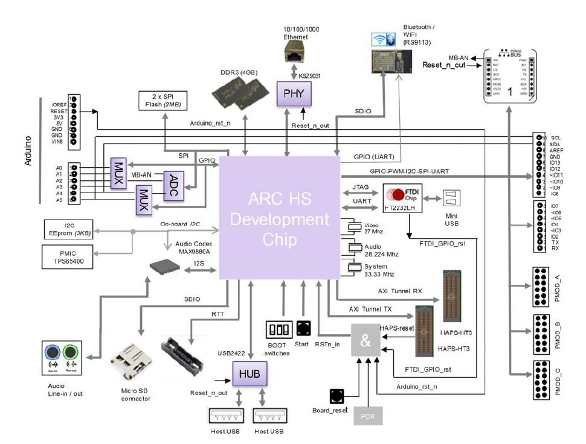
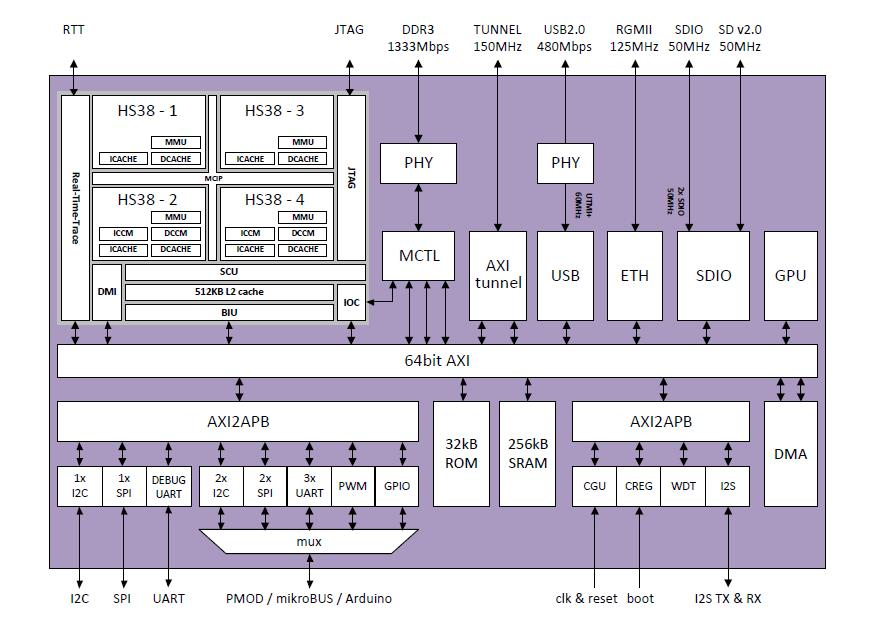

ARC HS Development Kit Description
The DesignWare® ARC® HS Development Kit (HSDK, hsdk) enables rapid software development, code porting, software debugging, and profiling for ARC HS processors. It is based on a custom Synopsys SoC developed for this platform, featuring the latest ARC HS38x4 quad-core and integrated peripheral controllers, running at 1GHz.

ARC HS Development Kit
The ARC HS Development Kit features the following components:
- ARC HS SoC:
- Quad Core HS38x4 Processor
- DDR3 memory controller
- GPU (Vivante)
- USB, Ethernet, SDIO
- DesignWare APB Peripherals (consult HSDK documentation for complete details)
- Memory / Storage:
- DDR3-1333 (4 GB)
- 2x SPI Flash (2 MB)
- I2C EEPROM (3 KB)
- Interfaces:
- USB2 (2x)
- Ethernet (10/100/1000)
- Audio - line in/out
- USB Data port (JTAG/UART)
- Micro-SD Card
- WIFI/BT module
- ADC (6 channels)
- RTT Nexus and JTAG connectors
- Extensions:
- AXI Tunnel (32-bit, 150 MHz)
- Arduino - Interface headers (UNO R3 compatible)
- mikroBUS headers
- Pmod Interfaces (3x), PMOD A and PMOD B (12 pins), PMOD C (6 pins)

ARC HSDK Block Diagram
ARC HS Development Chip Description

ARC HS Development Chip Block Diagram
The HS Development Chip provides the following main features:
- Flexible, customizable IC architecture
- Configurable / programmable boot scenarios
- Configurable / programmable memory map
- DesignWare HS38x4 quad-core @ 1GHz
- 64kByte instruction cache
- 64kByte data cache
- 256kByte ICCM (2 cores)
- 256kByte DCCM (2 cores)
- Memory Management Unit
- Physical Address Extension (PAE)
- 512kByte system level cache
- Support for IO coherency
- Support for Real-Time Trace
- Vivante GC7000 NanoUltra3T GPU Processing Unit @ 400Mhz
- Flexible clock generation
- system clocks
- 33MHz system reference clock input
- PLL for DDR clock
- PLL for TUNNEL clock
- PLL for ARC clock
- PLL for all other system clocks
- audio
- audio reference clock input (24.576 MHz)
- integer divider(s) for audio serial clock
- 256kByte SRAM
- DDR3 interface
- max speed grade DDR-1600 (800MHz)
- data width 32bit
- max row address width 16bit
- max bank address width 3bit
- max 2 memory ranks
- max supported DDR memory size is 4GByte
- I2S TX / RX interface
- USB 2.0 Host interface
- SDIO interfaces
- 10/100/1000Mbps Ethernet RGMII interface
- AXI tunnel interface
- source-synchronous
- max freq 150MHz
- max data throughput 600MByte/s
- UART interfaces
- I2C interfaces
- SPI interfaces
- PWM interfaces
- JTAG interface

ARC HSDK DIP Switch Setting
embARC OSP examples can be compiled by both ARC MetaWare (ccac) and ARC GNU (arc-elf32-gcc) compilers using the provided makefiles. Please refer How to Use embARC for more information.
Tools
The following tools are required for use with HSDK:
- Digilent Adept Software — software driver for the Digilent JTAG-USB cable.
- MetaWare Development Toolkit — a complete solution to develop, debug and tune applications for the DesignWare ARC processors.
- GNU Toolchain for ARC Processors — open-source toolchain to run and debug applications for the DesignWare ARC processors.